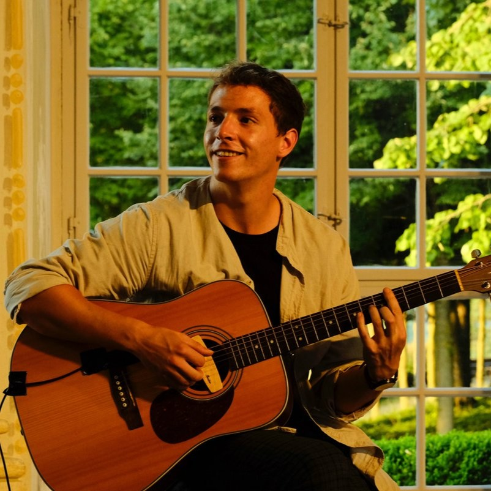

Home
Markus Foramitti
Institute for Clinical and Health Psychology
University of Vienna
About Me
I am a researcher in clinical and health psychology. My work centers on the psychophysiology of stress and the effects of music and auditory stimuli on stress responses. I combine experimental approaches with computational analyses of large-scale cultural data to study how stress manifests at both individual and societal levels.
Contact and Affiliation
Institute for Clinical and Health Psychology
University of Vienna
Liebiggasse 5, 1010 Wien
Mail: markus.foramitti@univie.ac.at
Phone: +43-1-4277-47208